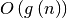

Contributing¶
This project is a community effort, and everyone is welcome to contribute.
The project is hosted on http://github.com/scikit-learn/scikit-learn
Submitting a bug report¶
In case you experience issues using this package, do not hesitate to submit a ticket to the Bug Tracker. You are also welcome to post feature requests or links to pull requests.
Retrieving the latest code¶
We use Git for version control and GitHub for hosting our main repository.
You can check out the latest sources with the command:
git clone git://github.com/scikit-learn/scikit-learn.git
or if you have write privileges:
git clone git@github.com:scikit-learn/scikit-learn.git
If you run the development version, it is cumbersome to reinstall the package each time you update the sources. It is thus preferred that you add the scikit-learn directory to your PYTHONPATH and build the extension in place:
python setup.py build_ext --inplace
On Unix-like systems, you can simply type make in the top-level folder to build in-place and launch all the tests. Have a look at the Makefile for additional utilities.
Contributing code¶
Note
To avoid duplicating work, it is highly advised that you contact the developers on the mailing list before starting work on a non-trivial feature.
https://lists.sourceforge.net/lists/listinfo/scikit-learn-general
How to contribute¶
The preferred way to contribute to scikit-learn is to fork the main repository on GitHub, then submit a “pull request” (PR):
Create an account on GitHub if you do not already have one.
Fork the project repository: click on the ‘Fork’ button near the top of the page. This creates a copy of the code under your account on the GitHub server.
Clone this copy to your local disk:
$ git clone git@github.com:YourLogin/scikit-learn.gitCreate a branch to hold your changes:
$ git checkout -b my-featureand start making changes. Never work in the master branch!
Work on this copy, on your computer, using Git to do the version control. When you’re done editing, do:
$ git add modified_files $ git committo record your changes in Git, then push them to GitHub with:
$ git push -u origin my-feature
Finally, go to the web page of the your fork of the scikit-learn repo, and click ‘Pull request’ to send your changes to the maintainers for review. request. This will send an email to the committers, but might also send an email to the mailing list in order to get more visibility.
Note
In the above setup, your origin remote repository points to YourLogin/scikit-learn.git. If you wish to fetch/merge from the main repository instead of your forked one, you will need to add another remote to use instead of origin. If we choose the name upstream for it, the command will be:
$ git remote add upstream https://github.com/scikit-learn/scikit-learn.git
(If any of the above seems like magic to you, then look up the Git documentation on the web.)
It is recommended to check that your contribution complies with the following rules before submitting a pull request:
Follow the coding-guidelines (see below).
When applicable, use the Validation tools and other code in the sklearn.utils submodule. A list of utility routines available for developers can be found in the Utilities for Developers page.
All public methods should have informative docstrings with sample usage presented as doctests when appropriate.
All other tests pass when everything is rebuilt from scratch. On Unix-like systems, check with (from the toplevel source folder):
$ makeWhen adding additional functionality, provide at least one example script in the examples/ folder. Have a look at other examples for reference. Examples should demonstrate why the new functionality is useful in practice and, if possible, compare it to other methods available in scikit-learn.
At least one paragraph of narrative documentation with links to references in the literature (with PDF links when possible) and the example. For more details on writing and building the documentation, see the Documentation section.
You can also check for common programming errors with the following tools:
Code with a good unittest coverage (at least 90%, better 100%), check with:
$ pip install nose coverage $ nosetests --with-coverage path/to/tests_for_packagesee also Testing and improving test coverage
No pyflakes warnings, check with:
$ pip install pyflakes $ pyflakes path/to/module.pyNo PEP8 warnings, check with:
$ pip install pep8 $ pep8 path/to/module.pyAutoPEP8 can help you fix some of the easy redundant errors:
$ pip install autopep8 $ autopep8 path/to/pep8.py
Bonus points for contributions that include a performance analysis with a benchmark script and profiling output (please report on the mailing list or on the GitHub wiki).
Also check out the How to optimize for speed guide for more details on profiling and Cython optimizations.
Note
The current state of the scikit-learn code base is not compliant with all of those guidelines, but we expect that enforcing those constraints on all new contributions will get the overall code base quality in the right direction.
Note
For two very well documented and more detailed guides on development workflow, please pay a visit to the Scipy Development Workflow - and the Astropy Workflow for Developers sections.
Easy Issues¶
A great way to start contributing to scikit-learn is to pick an item from the list of Easy issues in the issue tracker. Resolving these issues allow you to start contributing to the project without much prior knowledge. Your assistance in this area will be greatly appreciated by the more experienced developers as it helps free up their time to concentrate on other issues.
Documentation¶
We are glad to accept any sort of documentation: function docstrings, reStructuredText documents (like this one), tutorials, etc. reStructuredText documents live in the source code repository under the doc/ directory.
You can edit the documentation using any text editor, and then generate the HTML output by typing make html from the doc/ directory. Alternatively, make html-noplot can be used to quickly generate the documentation without the example gallery. The resulting HTML files will be placed in _build/html/ and are viewable in a web browser. See the README file in the doc/ directory for more information.
For building the documentation, you will need sphinx and matplotlib.
When you are writing documentation, it is important to keep a good compromise between mathematical and algorithmic details, and give intuition to the reader on what the algorithm does.
Basically, to elaborate on the above, it is best to always start with a small paragraph with a hand-waiving explanation of what the method does to the data. Then, it is very helpful to point out why the feature is useful and when it should be used - the latter also including “big O” () complexities of the algorithm, as opposed to just rules of thumb, as the latter can be very machine-dependent. If those complexities are not available, then rules of thumb may be provided instead.
Secondly, a generated figure from an example (as mentioned in the previous paragraph) should then be included to further provide some intuition.
Next, one or two small code examples to show its use can be added.
Finally, any math and equations, followed by references, can be added to further the documentation. Not starting the documentation with the maths makes it more friendly towards users that are just interested in what the feature will do, as opposed to how it works under the hood.
Warning
Sphinx version
While we do our best to have the documentation build under as many version of Sphinx as possible, the different versions tend to behave slightly differently. To get the best results, you should use version 1.0.
Testing and improving test coverage¶
High-quality unit testing is a corner-stone of the sciki-learn development process. For this purpose, we use the nose package. The tests are functions appropriately names, located in tests subdirectories, that check the validity of the algorithms and the different options of the code.
The full scikit-learn tests can be run using ‘make’ in the root folder. Alternatively, running ‘nosetests’ in a folder will run all the tests of the corresponding subpackages.
We expect code coverage of new features to be at least around 90%.
Note
Workflow to improve test coverage
To test code coverage, you need to install the coverage package in addition to nose.
- Run ‘make test-coverage’. The output lists for each file the line numbers that are not tested.
- Find a low hanging fruit, looking at which lines are not tested, write or adapt a test specifically for these lines.
- Loop.
Developers web site¶
More information can be found on the developer’s wiki.
Issue Tracker Tags¶
All issues and pull requests on the Github issue tracker should have (at least) one of the following tags:
| Bug / Crash: | Something is happening that clearly shouldn’t happen. Wrong results as well as unexpected errors from estimators go here. |
|---|---|
| Cleanup / Enhancement: | |
| Improving performance, usability, consistency. | |
| Documentation: | Missing, incorrect or sub-standard documentations and examples. |
| New Feature: | Feature requests and pull requests implementing a new feature. |
There are two other tags to help new contributors:
| Easy: | This issue can be tackled by anyone, no experience needed. Ask for help if the formulation is unclear. |
|---|---|
| Moderate: | Might need some knowledge of machine learning or the package, but is still approachable for someone new to the project. |
Other ways to contribute¶
Code is not the only way to contribute to scikit-learn. For instance, documentation is also a very important part of the project and often doesn’t get as much attention as it deserves. If you find a typo in the documentation, or have made improvements, do not hesitate to send an email to the mailing list or submit a GitHub pull request. Full documentation can be found under the doc/ directory.
It also helps us if you spread the word: reference the project from your blog and articles, link to it from your website, or simply say “I use it”:
Coding guidelines¶
The following are some guidelines on how new code should be written. Of course, there are special cases and there will be exceptions to these rules. However, following these rules when submitting new code makes the review easier so new code can be integrated in less time.
Uniformly formatted code makes it easier to share code ownership. The scikit-learn project tries to closely follow the official Python guidelines detailed in PEP8 that detail how code should be formatted and indented. Please read it and follow it.
In addition, we add the following guidelines:
- Use underscores to separate words in non class names: n_samples rather than nsamples.
- Avoid multiple statements on one line. Prefer a line return after a control flow statement (if/for).
- Use relative imports for references inside scikit-learn.
- Unit tests are an exception to the previous rule; they should use absolute imports, exactly as client code would. A corollary is that, if sklearn.foo exports a class or function that is implemented in sklearn.foo.bar.baz, the test should import it from sklearn.foo.
- Please don’t use `import *` in any case. It is considered harmful by the official Python recommendations. It makes the code harder to read as the origin of symbols is no longer explicitly referenced, but most important, it prevents using a static analysis tool like pyflakes to automatically find bugs in scikit-learn.
- Use the numpy docstring standard in all your docstrings.
A good example of code that we like can be found here.
Input validation¶
The module sklearn.utils contains various functions for doing input validation and conversion. Sometimes, np.asarray suffices for validation; do not use np.asanyarray or np.atleast_2d, since those let NumPy’s np.matrix through, which has a different API (e.g., * means dot product on np.matrix, but Hadamard product on np.ndarray).
In other cases, be sure to call safe_asarray, atleast2d_or_csr, as_float_array or array2d on any array-like argument passed to a scikit-learn API function. The exact function to use depends mainly on whether scipy.sparse matrices must be accepted.
For more information, refer to the Utilities for Developers page.
Random Numbers¶
If your code depends on a random number generator, do not use numpy.random.random() or similar routines. To ensure repeatability in error checking, the routine should accept a keyword random_state and use this to construct a numpy.random.RandomState object. See sklearn.utils.check_random_state in Utilities for Developers.
Here’s a simple example of code using some of the above guidelines:
from sklearn.utils import array2d, check_random_state
def choose_random_sample(X, random_state=0):
"""
Choose a random point from X
Parameters
----------
X : array-like, shape = (n_samples, n_features)
array representing the data
random_state : RandomState or an int seed (0 by default)
A random number generator instance to define the state of the
random permutations generator.
Returns
-------
x : numpy array, shape = (n_features,)
A random point selected from X
"""
X = array2d(X)
random_state = check_random_state(random_state)
i = random_state.randint(X.shape[0])
return X[i]
If you use randomness in an estimator instead of a freestanding function, some additional guidelines apply.
First off, the estimator should take a random_state argument to its __init__ with a default value of None. It should store that argument’s value, unmodified, in an attribute random_state. fit can call check_random_state on that attribute to get an actual random number generator. If, for some reason, randomness is needed after fit, the RNG should be stored in an attribute random_state_. The following example should make this clear:
class GaussianNoise(BaseEstimator, TransformerMixin):
"""This estimator ignores its input and returns random Gaussian noise.
It also does not adhere to all scikit-learn conventions,
but showcases how to handle randomness.
"""
def __init__(self, n_components=100, random_state=None):
self.random_state = random_state
# the arguments are ignored anyway, so we make them optional
def fit(self, X=None, y=None):
self.random_state_ = check_random_state(self.random_state)
def transform(self, X):
n_samples = X.shape[0]
return self.random_state_.randn(n_samples, n_components)
The reason for this setup is reproducibility: when an estimator is fit twice to the same data, it should produce an identical model both times, hence the validation in fit, not __init__.
Deprecation¶
If any publicly accessible method, function, attribute or parameter is renamed, we still support the old one for two releases and issue a deprecation warning when it is called/passed/accessed. E.g., if the function zero_one is renamed to zero_one_loss, we add the decorator deprecated (from sklearn.utils) to zero_one and call zero_one_loss from that function:
from ..utils import check_arrays, deprecated
def zero_one_loss(y_true, y_pred, normalize=True):
# actual implementation
@deprecated("Function 'zero_one' has been renamed to "
"'zero_one_loss' and will be removed in release 0.15."
"Default behavior is changed from 'normalize=False' to "
"'normalize=True'")
def zero_one(y_true, y_pred, normalize=False):
return zero_one_loss(y_true, y_pred, normalize)
If an attribute is to be deprecated, use the decorator deprecated on a property. E.g., renaming an attribute labels_ to classes_ can be done as:
@property
@deprecated("Attribute labels_ is deprecated and "
"will be removed in 0.15. Use 'classes_' instead")
def labels_(self):
return self.classes_
If a parameter has to be deprecated, use DeprecationWarning appropriately. In following example, k is deprecated and renamed to n_clusters:
import warnings
def example_function(n_clusters=8, k=None):
if k is not None:
warnings.warn("'k' was renamed to n_clusters and will "
"be removed in 0.15.",
DeprecationWarning)
n_clusters = k
Python 3.x support¶
All scikit-learn code should work unchanged in both Python 2.[67] and 3.2 or newer. Since Python 3.x is not backwards compatible, that may require changes to code and it certainly requires testing on both 2.6 or 2.7, and 3.2 or newer.
For most numerical algorithms, Python 3.x support is easy: just remember that print is a function and integer division is written //. String handling has been overhauled, though, as have parts of the Python standard library. The six package helps with cross-compatibility and is included in scikit-learn as sklearn.externals.six.
APIs of scikit-learn objects¶
To have a uniform API, we try to have a common basic API for all the objects. In addition, to avoid the proliferation of framework code, we try to adopt simple conventions and limit to a minimum the number of methods an object must implement.
Different objects¶
The main objects in scikit-learn are (one class can implement multiple interfaces):
| Estimator: | The base object, implements a fit method to learn from data, either: estimator = obj.fit(data, targets)
or: estimator = obj.fit(data)
|
|---|---|
| Predictor: | For supervised learning, or some unsupervised problems, implements: prediction = obj.predict(data)
Classification algorithms usually also offer a way to quantify certainty of a prediction, either using decision_function or predict_proba: probability = obj.predict_proba(data)
|
| Transformer: | For filtering or modifying the data, in a supervised or unsupervised way, implements: new_data = obj.transform(data)
When fitting and transforming can be performed much more efficiently together than separately, implements: new_data = obj.fit_transform(data)
|
| Model: | A model that can give a goodness of fit measure or a likelihood of unseen data, implements (higher is better): score = obj.score(data)
|
Estimators¶
The API has one predominant object: the estimator. A estimator is an object that fits a model based on some training data and is capable of inferring some properties on new data. It can be, for instance, a classifier or a regressor. All estimators implement the fit method:
estimator.fit(X, y)
All built-in estimators also have a set_params method, which sets data-independent parameters (overriding previous parameter values passed to __init__).
All estimators in the main scikit-learn codebase should inherit from sklearn.base.BaseEstimator.
Instantiation¶
This concerns the creation of an object. The object’s __init__ method might accept constants as arguments that determine the estimator’s behavior (like the C constant in SVMs). It should not, however, take the actual training data as an argument, as this is left to the fit() method:
clf2 = SVC(C=2.3)
clf3 = SVC([[1, 2], [2, 3]], [-1, 1]) # WRONG!
The arguments accepted by __init__ should all be keyword arguments with a default value. In other words, a user should be able to instantiate an estimator without passing any arguments to it. The arguments should all correspond to hyperparameters describing the model or the optimisation problem the estimator tries to solve. These initial arguments (or parameters) are always remembered by the estimator. Also note that they should not be documented under the Attributes section, but rather under the Parameters section for that estimator.
In addition, every keyword argument accepted by ``__init__`` should correspond to an attribute on the instance. Scikit-learn relies on this to find the relevant attributes to set on an estimator when doing model selection.
To summarize, a __init__ should look like:
def __init__(self, param1=1, param2=2):
self.param1 = param1
self.param2 = param2
There should be no logic, and the parameters should not be changed. The corresponding logic should be put where the parameters are used. The following is wrong:
def __init__(self, param1=1, param2=2, param3=3):
# WRONG: parameters should not be modified
if param1 > 1:
param2 += 1
self.param1 = param1
# WRONG: the object's attributes should have exactly the name of
# the argument in the constructor
self.param3 = param2
Scikit-learn relies on this mechanism to introspect objects to set their parameters by cross-validation.
Fitting¶
The next thing you will probably want to do is to estimate some parameters in the model. This is implemented in the fit() method.
The fit() method takes the training data as arguments, which can be one array in the case of unsupervised learning, or two arrays in the case of supervised learning.
Note that the model is fitted using X and y, but the object holds no reference to X and y. There are, however, some exceptions to this, as in the case of precomputed kernels where this data must be stored for use by the predict method.
| Parameters | |
|---|---|
| X | array-like, with shape = [N, D], where N is the number of samples and D is the number of features. |
| y | array, with shape = [N], where N is the number of samples. |
| kwargs | optional data-dependent parameters. |
X.shape[0] should be the same as y.shape[0]. If this requisite is not met, an exception of type ValueError should be raised.
y might be ignored in the case of unsupervised learning. However, to make it possible to use the estimator as part of a pipeline that can mix both supervised and unsupervised transformers, even unsupervised estimators are kindly asked to accept a y=None keyword argument in the second position that is just ignored by the estimator.
The method should return the object (self). This pattern is useful to be able to implement quick one liners in an IPython session such as:
y_predicted = SVC(C=100).fit(X_train, y_train).predict(X_test)
Depending on the nature of the algorithm, fit can sometimes also accept additional keywords arguments. However, any parameter that can have a value assigned prior to having access to the data should be an __init__ keyword argument. fit parameters should be restricted to directly data dependent variables. For instance a Gram matrix or an affinity matrix which are precomputed from the data matrix X are data dependent. A tolerance stopping criterion tol is not directly data dependent (although the optimal value according to some scoring function probably is).
Estimated Attributes¶
Attributes that have been estimated from the data must always have a name ending with trailing underscore, for example the coefficients of some regression estimator would be stored in a coef_ attribute after fit() has been called.
The last-mentioned attributes are expected to be overridden when you call fit a second time without taking any previous value into account: fit should be idempotent.
Optional Arguments¶
In iterative algorithms, the number of iterations should be specified by an integer called n_iter.
Rolling your own estimator¶
If you want to implement a new estimator that is scikit-learn-compatible, whether it is just for you or for contributing it to sklearn, there are several internals of scikit-learn that you should be aware of in addition to the sklearn API outlined above.
The main motivation to make a class compatible to the scikit-learn estimator interface might be that you want to use it together with model assessment and selection tools such as grid_search.GridSearchCV.
For this to work, you need to implement the following interface. If a dependency on scikit-learn is okay for your code, you can prevent a lot of boilerplate code by deriving a class from BaseEstimator and optionally the mixin classes in sklearn.base. E.g., here’s a custom classifier:
>>> import numpy as np
>>> from sklearn.base import BaseEstimator, ClassifierMixin
>>> class MajorityClassifier(BaseEstimator, ClassifierMixin):
... """Predicts the majority class of its training data."""
... def __init__(self):
... pass
... def fit(self, X, y):
... self.classes_, indices = np.unique(["foo", "bar", "foo"],
... return_inverse=True)
... self.majority_ = np.argmax(np.bincount(indices))
... return self
... def predict(self, X):
... return np.repeat(self.classes_[self.majority_], len(X))
get_params and set_params¶
All sklearn estimator have get_params and set_params functions. The get_params function takes no arguments and returns a dict of the __init__ parameters of the estimator, together with their values. It must take one keyword argument, deep, which receives a boolean value that determines whether the method should return the parameters of sub-estimators (for most estimators, this can be ignored). The default value for deep should be true.
The set_params on the other hand takes as input a dict of the form 'parameter': value and sets the parameter of the estimator using this dict.
While the get_params mechanism is not essential (see Cloning below), the set_params function is necessary as it is used to set parameters during grid searches.
The easiest way to implement these functions, and to get a sensible __repr__ method, is to inherit from sklearn.base.BaseEstimator. If you do not want to make your code dependent on scikit-learn, the easiest way to implement the interface is:
def get_params(self, deep=True):
# suppose this estimator has parameters "alpha" and "recursive"
return {"alpha": self.alpha, "recursive": self.recursive}
def set_params(self, **parameters):
for parameter, value in parameters.items():
self.setattr(parameter, value)
Parameters and init¶
As grid_search.GridSearchCV uses set_params to apply parameter setting to estimators, it is essential that calling set_params has the same effect as setting parameters using the __init__ method. The easiest and recommended way to accomplish this is to not do any parameter validation in ``__init__``. All logic behind estimator parameters, like translating string arguments into functions, should be done in fit.
Cloning¶
For using grid_search.GridSearch or any functionality of the cross_validation module, an estimator must support the base.clone function to replicate an estimator. This can be done by providing a get_params method. If get_params is present, then clone(estimator) will be an instance of type(estimator) on which set_params has been called with clones of the result of estimator.get_params().
Objects that do not provide this method will be deep-copied (using the Python standard function copy.deepcopy) if safe=False is passed to clone.
Pipeline compatibility¶
For an estimator to be usable together with pipeline.Pipeline in any but the last step, it needs to provide a fit or fit_transform function. To be able to evaluate the pipeline on any data but the training set, it also needs to provide a transform function. There are no special requirements for the last step in a pipeline, except that it has a fit function. All fit and fit_transform functions must take arguments X, y, even if y is not used.
Working notes¶
For unresolved issues, TODOs, and remarks on ongoing work, developers are advised to maintain notes on the GitHub wiki.
Specific models¶
Classifiers should accept y (target) arguments to fit that are sequences (lists, arrays) of either strings or integers. They should not assume that the class labels are a contiguous range of integers; instead, they should store a list of classes in a classes_ attribute or property. The order of class labels in this attribute should match the order in which predict_proba, predict_log_proba and decision_function return their values. The easiest way to achieve this is to put:
self.classes_, y = np.unique(y, return_inverse=True)
in fit. This return a new y that contains class indexes, rather than labels, in the range [0, n_classes).
A classifier’s predict method should return arrays containing class labels from classes_. In a classifier that implements decision_function, this can be achieved with:
def predict(self, X):
D = self.decision_function(X)
return self.classes_[np.argmax(D, axis=1)]
In linear models, coefficients are stored in an array called coef_, and the independent term is stored in intercept_. sklearn.linear_model.base contains a few base classes and mixins that implement common linear model patterns.
The sklearn.utils.multiclass module contains useful functions for working with multiclass and multilabel problems.